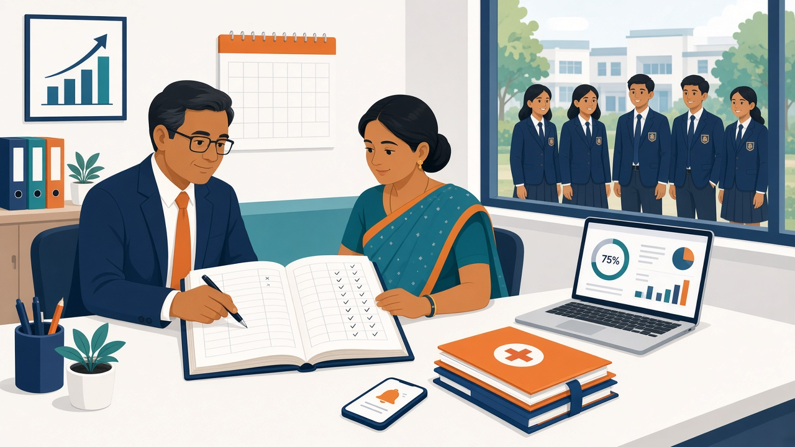

Under the CBSE 75% attendance rule, a Class 10 or Class 12 student can sit the board exam only if they have attended at least 75% of the classes held. That count runs from the day Class X or XII teaching begins up to the 1st of the month before the exams start. If CBSE inspectors walk in unannounced, the school has to show daily signed registers, a written leave record for every absence, and copies of the written notices sent to parents.
CBSE has disaffiliated schools after surprise checks, and on 16 October 2026 the Central Information Commission recommended more of them. Here is what your office should be able to put on the table if a CBSE team arrives tomorrow.
Rule 13 of the CBSE Examination Bye-Laws defines a "regular course of study" as at least 75% attendance in the classes held. The details that catch schools out:
The SOP attached to CBSE's attendance letters says attendance is calculated as of 1 January of the academic session. Check the current session's circular, but plan around 1 January.
On 16 October 2026, the Indian Express and the Times of India reported that Information Commissioner Sudha Rani Relangi had recommended that CBSE use its power to inspect affiliated schools without notice. The recommendation was made under Section 25(5) of the RTI Act and followed a complaint about dummy admissions, where students get board results without attending classes. In its reply, CBSE quoted its Affiliation Bye-Laws, 2018: no affiliated school shall present candidates who are on its roll but have not attended regularly or do not meet minimum attendance.
CBSE has acted on this before. Its press release of 6 November 2024 says surprise inspections of 27 schools in Rajasthan and Delhi on 3 September 2024 led to 21 schools having their affiliation withdrawn "due to significant numbers of non-attending students from classes IX-XII". Another 6 schools were downgraded from senior secondary to secondary level. The findings were backed by video evidence.
CBSE's letter of 9 October 2024 says students found absent without proper leave records will be presumed not to be attending, and will not be allowed to sit the board exams. The 4 August 2025 letter repeats this for 2025-26: such students "may be treated as non-attending/dummy candidates." If records are incomplete, the school can face strict action, including disaffiliation.
These come from CBSE's 2024 and 2025 attendance letters. Treat them as your inspection file.
One more thing to know before you edit anything: CBSE states that no changes to attendance records will be permitted once the school has submitted shortage of attendance cases. The 2025 SOP adds that if a school reports a shortage and later says the attendance is now complete, CBSE will treat that as manipulation. Fix errors early, and keep a record of who corrected what and why. Our post on school ERP audit logs covers how to set up an edit policy.
Condonation is an exception, not a plan. What the CBSE documents say:
If you are also handling the board's list of candidates, our CBSE LOC checklist for the school office covers that work.
Paper registers and WhatsApp messages make all of this hard to prove. ConnectEdu records student attendance daily. When a student is marked absent, parents get an alert as a push notification in the ConnectEdu parent app, which covers the same-day message. Our biometric attendance guide explains how that works with biometric devices.
The audit log records edits to attendance, marks, fees and student details. So when an entry is corrected, you can see that it was changed and by whom.
Principals can ask the Admin AI Agent questions about attendance in plain language, in any language, with answers in English. Answers come from live school data via secure database queries. Today the agent searches and answers. It does not send reminders or take actions.
Staff attendance is covered too, by manual entry or biometric, with configurable late and absent policies. If your parent communication still runs through group chats, read why structured acknowledgements beat WhatsApp PTA groups.
Keep sending the written notices CBSE asks for (post or e-mail). App alerts help parents act fast, but they do not replace them.
Under rule 13 of the CBSE Examination Bye-Laws, a Class 10 or 12 student must attend at least 75% of the classes held to be eligible for the board exam. The count runs from the start of Class X/XII teaching to the 1st of the month before the exams begin. Subjects with practicals need 75% of the practical attendance as well.
The SOP attached to CBSE's 2024 and 2025 attendance letters says attendance is calculated as of 1 January of the academic session. Check the current session's circular for confirmation.
Yes, but only on documented grounds such as prolonged illness, the death of a parent, a similar serious reason, or authorised sports participation. The case has to reach the Regional Office by 7 January of the session with the mandatory documents and the school's recommendation, or it is rejected.
CBSE's letters ask for daily attendance registers signed by the class teacher and the competent authority, written leave applications with medical or other documents, and records of written notices to parents. Students absent without proper leave records may be treated as non-attending or dummy candidates.
It is when a student is on a school's roll but does not actually attend classes, yet still takes the board exam through that school. CBSE's Affiliation Bye-Laws, 2018 say a school must not present such candidates for the board exam. In November 2024, CBSE withdrew the affiliation of 21 schools after surprise inspections found significant numbers of non-attending students.
No. CBSE says no changes to attendance records are permitted once shortage cases are submitted. Its 2025 SOP treats a later claim that attendance is now complete as manipulation.
No. ConnectEdu does not file anything with CBSE. It records daily student attendance, alerts parents through the parent app, and keeps an audit log of attendance edits, so the school's own records are easier to keep complete.
ConnectEdu brings student attendance, parent alerts, staff attendance, fees, exams and bus tracking into one system. Book a ConnectEdu school demo, or log in if your school is already on ConnectEdu.
By Muhammed Shihabudeen Labba